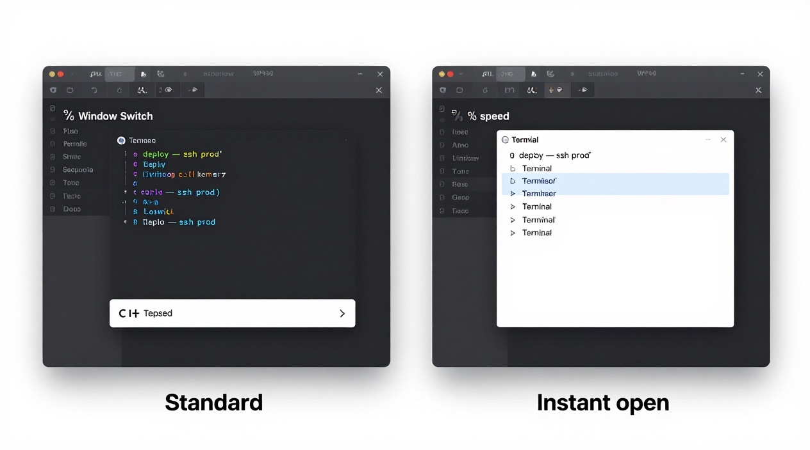
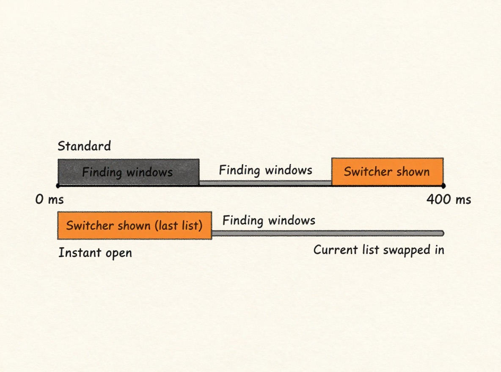
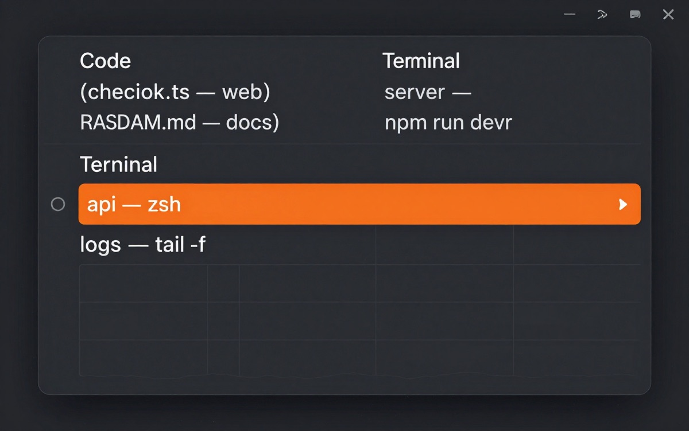
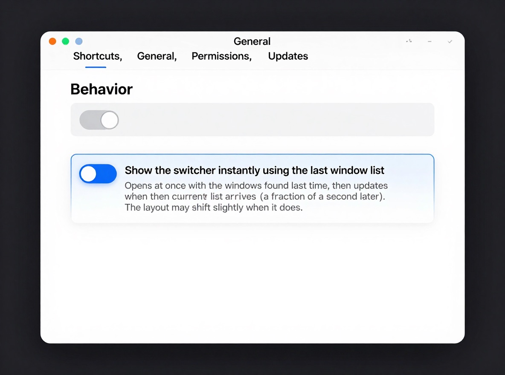

Features / Instant open
Instant openThere the moment you press it.
With instant open on, the switcher appears at once with the windows it found last time. The current list takes over a fraction of a second later, while you're still reading.
● Off by default. Nothing runs in the background to do it

AI draft · replaceIt looks before it shows you.
Each time you open it, Window Switcher asks every app for its windows on every Space. With ten or so apps open, that takes about 250 to 400 milliseconds.
- Apps are asked side by side. Not one after another.
- A busy app can't hold it up. If an app is slow to answer, the switcher stops waiting for it.
- What you see is current. The list is exactly what's open right now.

AI draft · replaceLast time's list now. This time's list next.
The switcher opens from the list it found last time, kept in memory. A fresh lookup runs at the same moment, and its result replaces the old list as soon as it's ready.
- Your selection stays put. It follows the app and window you had selected, not a position in the list.
- New windows appear when the list updates. The layout may shift slightly when they do.
- Start typing right away. You can read and press keys while it catches up.

AI draft · replaceFast without anything running.
The saved list is only refreshed when you open the switcher. There's no timer and no background watching between uses. It just remembers what it saw last time.

AI draft · replaceSettings that change it.
In Settings → General.
Good to know.
Should I turn it on?
Turn it on if you notice the short wait when the switcher opens. Leave it off if you'd rather the list never changes while it's on screen.
Does it keep checking my windows in the background?
No. The list is only looked up when you open the switcher. Between uses, nothing runs.
What if I closed a window since last time?
It may show for a moment, then drop out when the current list arrives. Your selection stays on the same app or window.
Is the first open instant too?
The very first open after Window Switcher starts has no saved list yet, so it opens the standard way. Every open after that is instant.
Press ⌥⇥. Then the next key you want.
Free for the Mac. No account, nothing running in the background, and every app has a key the moment it's installed.
Download Window Switcher for Mac